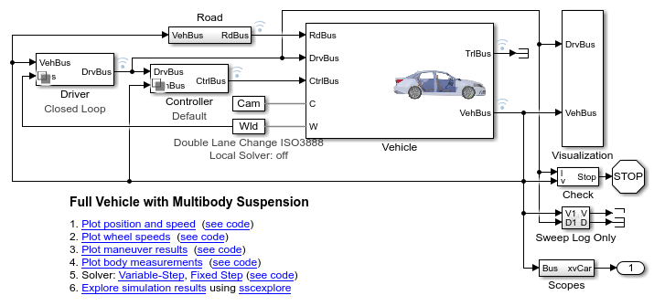
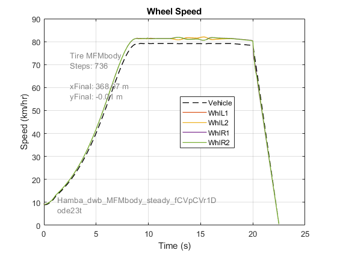
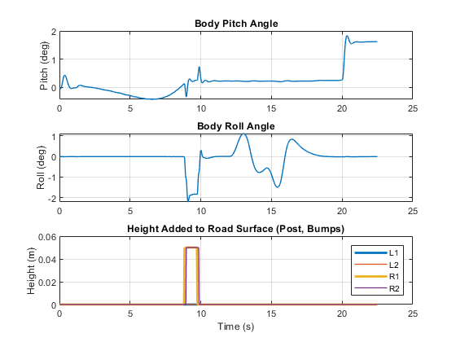
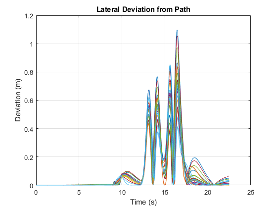
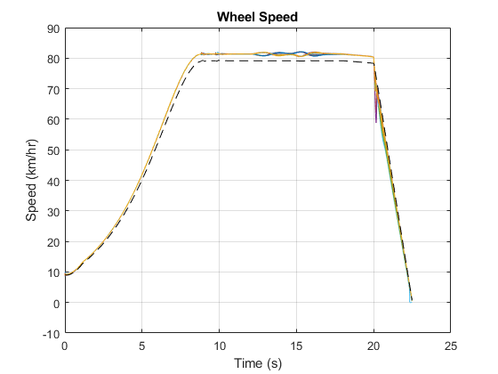
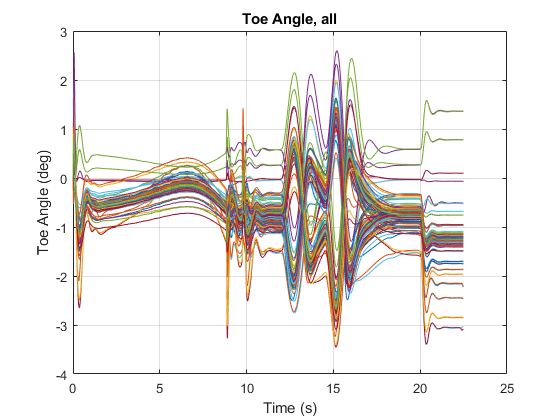
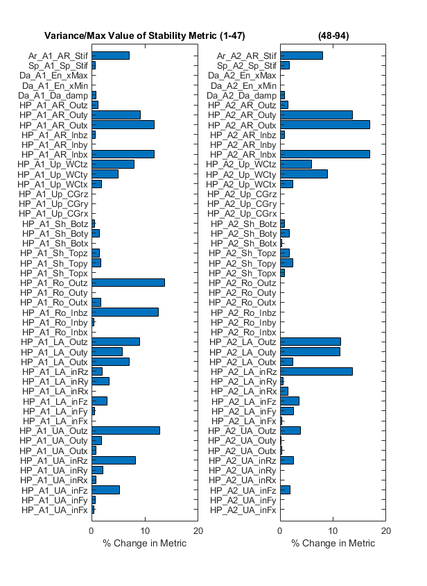
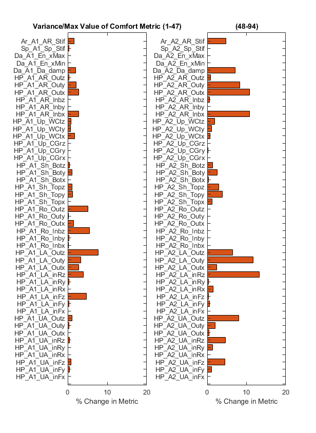
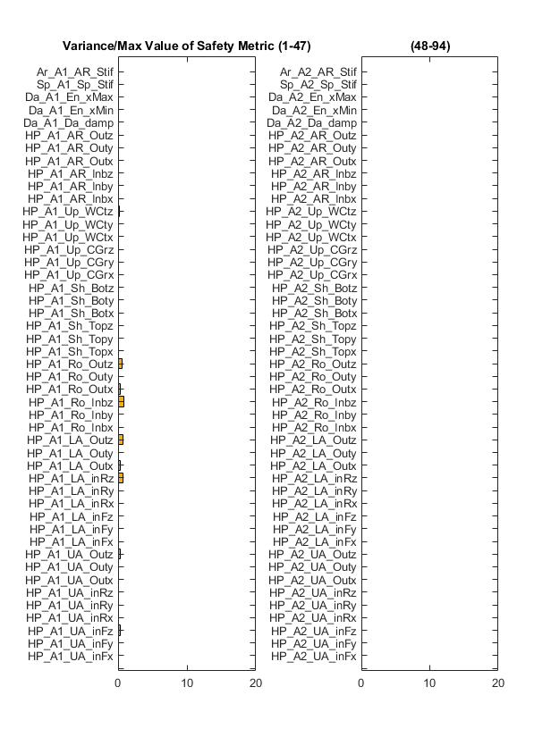

Create Virtual Test with Performance Metrics
This example individually tests the vehicle model with one parameter value set to one of its range limits. This simple sweep ensures that
- Parameter values are modified in parallel simulations without recompiling
- Tests at parameter limits do not result in invalid tests (locked wheels, etc.)
- Performance metrics are calculated properly
A simple measure of the sensitivity to each metric is calculated by measuring the percent change in the performance metric as the parameter value is set to its limits. A more robust evaluation of the performance metric would require a design of experiments to test a distribution of the parameters.
The code used to create this documentation is here: suspOpt_sweep_param_limits.m
(return to Optimizing Vehicle Design Using AI and Simscape Overview)
Contents
Open Vehicle Model
Open model and load default parameters. The vehicle model is set up to perform a test in three stages.
- Ride over a bump and measure ride comfort
- Complete a double-lane change maneuver (ISO 3888) and measure stability
- Brake to a stop and measure braking distance
For each stage, a performance metric is calculated. In the plots below you can see the changes in body pitch and roll angle as it passes over the bump and through the double-lane change. The wheel speeds show the steering and braking during the maneuver.
  Generate Table of Design Parameters
Adjusting the design requires selecting a set of design parameters to tune and setting ranges for those values. That set is defined in a table. For each parameter we specify:
- Label: A short character string to identify the parameter
- Parameter: Location in a MATLAB structure where the parameter is defined
- Index: Index of the value within the structure field
- Use: Indicator if the parameter should be tuned (true/false). Set to "true" until a senstivity analysis has been performed.
- Min: Minimum value for parameter range
- Max: Maximum value for parameter range
- Default: Default value for parameter
parTableVal =
94×7 table
Label Parameter Index Use Min Max Default
_________________ ________________________________________________________________ _____ _____ _________ _________ _________
{'HP_A1_UA_inFx'} {'Vehicle.Chassis.SuspA1.Linkage.UpperWishbone.sInboardF.Value'} 1 true 0.05 0.15 0.1
{'HP_A1_UA_inFy'} {'Vehicle.Chassis.SuspA1.Linkage.UpperWishbone.sInboardF.Value'} 2 true 0.401 0.501 0.451
{'HP_A1_UA_inFz'} {'Vehicle.Chassis.SuspA1.Linkage.UpperWishbone.sInboardF.Value'} 3 true 0.38 0.48 0.43
{'HP_A1_UA_inRx'} {'Vehicle.Chassis.SuspA1.Linkage.UpperWishbone.sInboardR.Value'} 1 true -0.155 -0.055 -0.105
{'HP_A1_UA_inRy'} {'Vehicle.Chassis.SuspA1.Linkage.UpperWishbone.sInboardR.Value'} 2 true 0.401 0.501 0.451
{'HP_A1_UA_inRz'} {'Vehicle.Chassis.SuspA1.Linkage.UpperWishbone.sInboardR.Value'} 3 true 0.36 0.46 0.41
{'HP_A1_UA_Outx'} {'Vehicle.Chassis.SuspA1.Linkage.UpperWishbone.sOutboard.Value'} 1 true -0.09 0.01 -0.04
{'HP_A1_UA_Outy'} {'Vehicle.Chassis.SuspA1.Linkage.UpperWishbone.sOutboard.Value'} 2 true 0.6372 0.7372 0.6872
{'HP_A1_UA_Outz'} {'Vehicle.Chassis.SuspA1.Linkage.UpperWishbone.sOutboard.Value'} 3 true 0.4 0.5 0.45
{'HP_A1_LA_inFx'} {'Vehicle.Chassis.SuspA1.Linkage.LowerWishbone.sInboardF.Value'} 1 true 0.175 0.275 0.225
{'HP_A1_LA_inFy'} {'Vehicle.Chassis.SuspA1.Linkage.LowerWishbone.sInboardF.Value'} 2 true 0.256 0.356 0.306
{'HP_A1_LA_inFz'} {'Vehicle.Chassis.SuspA1.Linkage.LowerWishbone.sInboardF.Value'} 3 true 0.1 0.2 0.15
{'HP_A1_LA_inRx'} {'Vehicle.Chassis.SuspA1.Linkage.LowerWishbone.sInboardR.Value'} 1 true -0.175 -0.075 -0.125
{'HP_A1_LA_inRy'} {'Vehicle.Chassis.SuspA1.Linkage.LowerWishbone.sInboardR.Value'} 2 true 0.256 0.356 0.306
{'HP_A1_LA_inRz'} {'Vehicle.Chassis.SuspA1.Linkage.LowerWishbone.sInboardR.Value'} 3 true 0.12 0.2 0.15
{'HP_A1_LA_Outx'} {'Vehicle.Chassis.SuspA1.Linkage.LowerWishbone.sOutboard.Value'} 1 true -0.035 0.065 0.015
{'HP_A1_LA_Outy'} {'Vehicle.Chassis.SuspA1.Linkage.LowerWishbone.sOutboard.Value'} 2 true 0.716 0.816 0.766
{'HP_A1_LA_Outz'} {'Vehicle.Chassis.SuspA1.Linkage.LowerWishbone.sOutboard.Value'} 3 true 0.1 0.2 0.15
{'HP_A1_Ro_Inbx'} {'Vehicle.Chassis.SuspA1.Linkage.TrackRod.sInboard.Value' } 1 true 0.08708 0.18708 0.13708
{'HP_A1_Ro_Inby'} {'Vehicle.Chassis.SuspA1.Linkage.TrackRod.sInboard.Value' } 2 true 0.389 0.489 0.439
{'HP_A1_Ro_Inbz'} {'Vehicle.Chassis.SuspA1.Linkage.TrackRod.sInboard.Value' } 3 true 0.175 0.235 0.205
{'HP_A1_Ro_Outx'} {'Vehicle.Chassis.SuspA1.Linkage.TrackRod.sOutboard.Value' } 1 true 0.09208 0.19208 0.14208
{'HP_A1_Ro_Outy'} {'Vehicle.Chassis.SuspA1.Linkage.TrackRod.sOutboard.Value' } 2 true 0.739 0.839 0.789
{'HP_A1_Ro_Outz'} {'Vehicle.Chassis.SuspA1.Linkage.TrackRod.sOutboard.Value' } 3 true 0.155 0.235 0.185
{'HP_A1_Sh_Topx'} {'Vehicle.Chassis.SuspA1.Linkage.Shock.sTop.Value' } 1 true -0.000217 0.099783 0.049783
{'HP_A1_Sh_Topy'} {'Vehicle.Chassis.SuspA1.Linkage.Shock.sTop.Value' } 2 true 0.44199 0.54199 0.49199
{'HP_A1_Sh_Topz'} {'Vehicle.Chassis.SuspA1.Linkage.Shock.sTop.Value' } 3 true 0.47586 0.57586 0.52586
{'HP_A1_Sh_Botx'} {'Vehicle.Chassis.SuspA1.Linkage.Shock.sBottom.Value' } 1 true 0.019783 0.079783 0.049783
{'HP_A1_Sh_Boty'} {'Vehicle.Chassis.SuspA1.Linkage.Shock.sBottom.Value' } 2 true 0.686 0.746 0.716
{'HP_A1_Sh_Botz'} {'Vehicle.Chassis.SuspA1.Linkage.Shock.sBottom.Value' } 3 true 0.12 0.18 0.15
{'HP_A1_Up_CGrx'} {'Vehicle.Chassis.SuspA1.Linkage.Upright.sCG.Value' } 1 true -0.02 0.02 0
{'HP_A1_Up_CGry'} {'Vehicle.Chassis.SuspA1.Linkage.Upright.sCG.Value' } 2 true 0.71 0.75 0.73
{'HP_A1_Up_CGrz'} {'Vehicle.Chassis.SuspA1.Linkage.Upright.sCG.Value' } 3 true 0.31 0.35 0.33
{'HP_A1_Up_WCtx'} {'Vehicle.Chassis.SuspA1.Linkage.Upright.sWheelCentre.Value' } 1 true -0.05 0.05 0
{'HP_A1_Up_WCty'} {'Vehicle.Chassis.SuspA1.Linkage.Upright.sWheelCentre.Value' } 2 true 0.7375 0.8375 0.7875
{'HP_A1_Up_WCtz'} {'Vehicle.Chassis.SuspA1.Linkage.Upright.sWheelCentre.Value' } 3 true 0.28 0.38 0.33
{'HP_A1_AR_Inbx'} {'Vehicle.Chassis.SuspA1.AntiRollBar.sInboard.Value' } 1 true -0.35 -0.25 -0.3
{'HP_A1_AR_Inby'} {'Vehicle.Chassis.SuspA1.AntiRollBar.sInboard.Value' } 2 true 0.53 0.63 0.58
{'HP_A1_AR_Inbz'} {'Vehicle.Chassis.SuspA1.AntiRollBar.sInboard.Value' } 3 true 0.1 0.2 0.15
{'HP_A1_AR_Outx'} {'Vehicle.Chassis.SuspA1.AntiRollBar.sOutboard.Value' } 1 true -0.1 0 -0.05
{'HP_A1_AR_Outy'} {'Vehicle.Chassis.SuspA1.AntiRollBar.sOutboard.Value' } 2 true 0.55 0.65 0.6
{'HP_A1_AR_Outz'} {'Vehicle.Chassis.SuspA1.AntiRollBar.sOutboard.Value' } 3 true 0.2 0.3 0.25
{'Da_A1_Da_damp'} {'Vehicle.Chassis.Damper.Axle1.Damping.d.Value' } 1 true 4000 7600 5500
{'Da_A1_En_xMin'} {'Vehicle.Chassis.Damper.Axle1.Endstop.xMin.Value' } 1 true -0.0875 -0.085 -0.086
{'Da_A1_En_xMax'} {'Vehicle.Chassis.Damper.Axle1.Endstop.xMax.Value' } 1 true 0.0625 0.065 0.064
{'Sp_A1_Sp_Stif'} {'Vehicle.Chassis.Spring.Axle1.K.Value' } 1 true 46000 58000 52000
{'Ar_A1_AR_Stif'} {'Vehicle.Chassis.SuspA1.AntiRollBar.k.Value' } 1 true 22 38 30
{'HP_A2_UA_inFx'} {'Vehicle.Chassis.SuspA2.Linkage.UpperWishbone.sInboardF.Value'} 1 true 0.05 0.15 0.1
{'HP_A2_UA_inFy'} {'Vehicle.Chassis.SuspA2.Linkage.UpperWishbone.sInboardF.Value'} 2 true 0.401 0.501 0.451
{'HP_A2_UA_inFz'} {'Vehicle.Chassis.SuspA2.Linkage.UpperWishbone.sInboardF.Value'} 3 true 0.37 0.47 0.42
{'HP_A2_UA_inRx'} {'Vehicle.Chassis.SuspA2.Linkage.UpperWishbone.sInboardR.Value'} 1 true -0.155 -0.055 -0.105
{'HP_A2_UA_inRy'} {'Vehicle.Chassis.SuspA2.Linkage.UpperWishbone.sInboardR.Value'} 2 true 0.401 0.501 0.451
{'HP_A2_UA_inRz'} {'Vehicle.Chassis.SuspA2.Linkage.UpperWishbone.sInboardR.Value'} 3 true 0.37 0.47 0.42
{'HP_A2_UA_Outx'} {'Vehicle.Chassis.SuspA2.Linkage.UpperWishbone.sOutboard.Value'} 1 true -0.05 0.05 0
{'HP_A2_UA_Outy'} {'Vehicle.Chassis.SuspA2.Linkage.UpperWishbone.sOutboard.Value'} 2 true 0.656 0.756 0.706
{'HP_A2_UA_Outz'} {'Vehicle.Chassis.SuspA2.Linkage.UpperWishbone.sOutboard.Value'} 3 true 0.4 0.5 0.45
{'HP_A2_LA_inFx'} {'Vehicle.Chassis.SuspA2.Linkage.LowerWishbone.sInboardF.Value'} 1 true 0.175 0.275 0.225
{'HP_A2_LA_inFy'} {'Vehicle.Chassis.SuspA2.Linkage.LowerWishbone.sInboardF.Value'} 2 true 0.256 0.356 0.306
{'HP_A2_LA_inFz'} {'Vehicle.Chassis.SuspA2.Linkage.LowerWishbone.sInboardF.Value'} 3 true 0.138 0.238 0.188
{'HP_A2_LA_inRx'} {'Vehicle.Chassis.SuspA2.Linkage.LowerWishbone.sInboardR.Value'} 1 true -0.175 -0.075 -0.125
{'HP_A2_LA_inRy'} {'Vehicle.Chassis.SuspA2.Linkage.LowerWishbone.sInboardR.Value'} 2 true 0.256 0.356 0.306
{'HP_A2_LA_inRz'} {'Vehicle.Chassis.SuspA2.Linkage.LowerWishbone.sInboardR.Value'} 3 true 0.1 0.2 0.15
{'HP_A2_LA_Outx'} {'Vehicle.Chassis.SuspA2.Linkage.LowerWishbone.sOutboard.Value'} 1 true -0.05 0.05 0
{'HP_A2_LA_Outy'} {'Vehicle.Chassis.SuspA2.Linkage.LowerWishbone.sOutboard.Value'} 2 true 0.656 0.756 0.706
{'HP_A2_LA_Outz'} {'Vehicle.Chassis.SuspA2.Linkage.LowerWishbone.sOutboard.Value'} 3 true 0.1 0.2 0.15
{'HP_A2_Ro_Inbx'} {'Vehicle.Chassis.SuspA2.Linkage.TrackRod.sInboard.Value' } 1 true -0.18 -0.08 -0.13
{'HP_A2_Ro_Inby'} {'Vehicle.Chassis.SuspA2.Linkage.TrackRod.sInboard.Value' } 2 true 0.359 0.459 0.409
{'HP_A2_Ro_Inbz'} {'Vehicle.Chassis.SuspA2.Linkage.TrackRod.sInboard.Value' } 3 true 0.155 0.215 0.185
{'HP_A2_Ro_Outx'} {'Vehicle.Chassis.SuspA2.Linkage.TrackRod.sOutboard.Value' } 1 true -0.15 -0.11 -0.13
{'HP_A2_Ro_Outy'} {'Vehicle.Chassis.SuspA2.Linkage.TrackRod.sOutboard.Value' } 2 true 0.739 0.779 0.759
{'HP_A2_Ro_Outz'} {'Vehicle.Chassis.SuspA2.Linkage.TrackRod.sOutboard.Value' } 3 true 0.155 0.205 0.185
{'HP_A2_Sh_Topx'} {'Vehicle.Chassis.SuspA2.Linkage.Shock.sTop.Value' } 1 true -0.10387 -0.00387 -0.05387
{'HP_A2_Sh_Topy'} {'Vehicle.Chassis.SuspA2.Linkage.Shock.sTop.Value' } 2 true 0.44195 0.54195 0.49195
{'HP_A2_Sh_Topz'} {'Vehicle.Chassis.SuspA2.Linkage.Shock.sTop.Value' } 3 true 0.47286 0.57286 0.52286
{'HP_A2_Sh_Botx'} {'Vehicle.Chassis.SuspA2.Linkage.Shock.sBottom.Value' } 1 true -0.083587 -0.023587 -0.053587
{'HP_A2_Sh_Boty'} {'Vehicle.Chassis.SuspA2.Linkage.Shock.sBottom.Value' } 2 true 0.686 0.746 0.716
{'HP_A2_Sh_Botz'} {'Vehicle.Chassis.SuspA2.Linkage.Shock.sBottom.Value' } 3 true 0.12 0.18 0.15
{'HP_A2_Up_CGrx'} {'Vehicle.Chassis.SuspA2.Linkage.Upright.sCG.Value' } 1 true -0.02 0.02 0
{'HP_A2_Up_CGry'} {'Vehicle.Chassis.SuspA2.Linkage.Upright.sCG.Value' } 2 true 0.72 0.76 0.74
{'HP_A2_Up_CGrz'} {'Vehicle.Chassis.SuspA2.Linkage.Upright.sCG.Value' } 3 true 0.31 0.35 0.33
{'HP_A2_Up_WCtx'} {'Vehicle.Chassis.SuspA2.Linkage.Upright.sWheelCentre.Value' } 1 true -0.05 0.05 0
{'HP_A2_Up_WCty'} {'Vehicle.Chassis.SuspA2.Linkage.Upright.sWheelCentre.Value' } 2 true 0.7375 0.8375 0.7875
{'HP_A2_Up_WCtz'} {'Vehicle.Chassis.SuspA2.Linkage.Upright.sWheelCentre.Value' } 3 true 0.28 0.38 0.33
{'HP_A2_AR_Inbx'} {'Vehicle.Chassis.SuspA2.AntiRollBar.sInboard.Value' } 1 true 0.25 0.35 0.3
{'HP_A2_AR_Inby'} {'Vehicle.Chassis.SuspA2.AntiRollBar.sInboard.Value' } 2 true 0.53 0.63 0.58
{'HP_A2_AR_Inbz'} {'Vehicle.Chassis.SuspA2.AntiRollBar.sInboard.Value' } 3 true 0.1 0.2 0.15
{'HP_A2_AR_Outx'} {'Vehicle.Chassis.SuspA2.AntiRollBar.sOutboard.Value' } 1 true 0 0.1 0.05
{'HP_A2_AR_Outy'} {'Vehicle.Chassis.SuspA2.AntiRollBar.sOutboard.Value' } 2 true 0.55 0.65 0.6
{'HP_A2_AR_Outz'} {'Vehicle.Chassis.SuspA2.AntiRollBar.sOutboard.Value' } 3 true 0.2 0.3 0.25
{'Da_A2_Da_damp'} {'Vehicle.Chassis.Damper.Axle2.Damping.d.Value' } 1 true 4000 7600 5500
{'Da_A2_En_xMin'} {'Vehicle.Chassis.Damper.Axle2.Endstop.xMin.Value' } 1 true -0.0875 -0.085 -0.086
{'Da_A2_En_xMax'} {'Vehicle.Chassis.Damper.Axle2.Endstop.xMax.Value' } 1 true 0.0625 0.065 0.064
{'Sp_A2_Sp_Stif'} {'Vehicle.Chassis.Spring.Axle2.K.Value' } 1 true 46000 58000 52000
{'Ar_A2_AR_Stif'} {'Vehicle.Chassis.SuspA2.AntiRollBar.k.Value' } 1 true 40 60 50
Create Simulation Input Objects to Test Range Limits
A suite of tests is defined using the table above. For each test, all parameters set to the default value and one parameter set to either of its range limits. The tests are created using a SimulationInput object so that the tests can be performed in series or parallel without modifying the original model. Parameter value changes and any model parameter setting overrides are applied temporarily during the test using the SimulationInput object.
simInputFR =
1×188 SimulationInput array with properties:
ModelName
InitialState
ExternalInput
ModelParameters
BlockParameters
Variables
PreSimFcn
PostSimFcn
UserString
VariantConfiguration
Run Simulations Using Parallel Computing
Using the parsim() command, the suite of tests is executed in parallel on multiple workers. Using Fast Restart, the model is only compiled once per worker. Because we have defined the design parameters as run-time parameters, we can modify their values even within the compiled model. This dramatically shortens the time it takes to execute the sweep.
Progress is reported using the Simulation Manager. We can see if any warnings or errors have occurred during any of the tests and see how long each run has taken.
Starting parallel pool (parpool) using the 'Processes' profile ... Connected to parallel pool with 4 workers. 188 simulations completed in 745.5389 seconds.
Check Run Validity
The outputs of the test sweep are checked to make sure the runs are all valid. A test run is deemed invalid if any of the following thresholds are exceeded for an unacceptable period of time:
- The toe angle of either front wheel.
- The lateral deviation of the vehicle from the target path.
- The wheel speed deviation measured as difference in wheel tangential velocity and chassis speed.
Plot show the values of the measurements for all the runs, and a count of the valid runs is displayed. If any run is invalid, we may need to reconsider our parameter ranges.
Number of valid runs: 188  
Extract Performance Metrics
For all runs, performance metrics are calculated.
- Ride Comfort: The magnitude of the vertical acceleration, roll acceleration, and pitch acceleration of the vehicle body is integrated during the period of time the vehicle passes over a bump. Larger values indicates worse ride comfort.
- Roll Stability: The L2 norm of the roll angle is calculated during the period of time the vehicle is in the double lane change maneuver. Larger values indicate worse vehicle stability.
- Vehicle Safety: The braking distance at the end of the test is measured. Longer braking distance indicates worse safety.
The impact of the parameters on the performance metric are plotted. The plot shows (Metric with parameter at max value - Metric with parameter at min value)/(maximum observed performance metric value).
This simple measure indicates how sensitive the metric is to the parameter value. A more rigorous sensitivity analysis should be performed to truly determine parameter sensitivity. The plots show that the design parameters have a relatively small impact on the braking distance.
  Identify Sensitive Values Based on Variance Threshold
Based on the above result, we can see many parameters have a relatively small impact on the performance metrics. To limit the design space, we pick the parameters with the largest impact on the ride comfort and roll stability metrics and combine them into a single list.
ans =
35×7 table
Label Parameter Index Use Min Max Default
_________________ ________________________________________________________________ _____ _____ _______ _______ _______
{'Ar_A1_AR_Stif'} {'Vehicle.Chassis.SuspA1.AntiRollBar.k.Value' } 1 true 22 38 30
{'Ar_A2_AR_Stif'} {'Vehicle.Chassis.SuspA2.AntiRollBar.k.Value' } 1 true 40 60 50
{'Da_A2_Da_damp'} {'Vehicle.Chassis.Damper.Axle2.Damping.d.Value' } 1 true 4000 7600 5500
{'HP_A1_AR_Inbx'} {'Vehicle.Chassis.SuspA1.AntiRollBar.sInboard.Value' } 1 true -0.35 -0.25 -0.3
{'HP_A1_AR_Outx'} {'Vehicle.Chassis.SuspA1.AntiRollBar.sOutboard.Value' } 1 true -0.1 0 -0.05
{'HP_A1_AR_Outy'} {'Vehicle.Chassis.SuspA1.AntiRollBar.sOutboard.Value' } 2 true 0.55 0.65 0.6
{'HP_A1_LA_Outx'} {'Vehicle.Chassis.SuspA1.Linkage.LowerWishbone.sOutboard.Value'} 1 true -0.035 0.065 0.015
{'HP_A1_LA_Outy'} {'Vehicle.Chassis.SuspA1.Linkage.LowerWishbone.sOutboard.Value'} 2 true 0.716 0.816 0.766
{'HP_A1_LA_Outz'} {'Vehicle.Chassis.SuspA1.Linkage.LowerWishbone.sOutboard.Value'} 3 true 0.1 0.2 0.15
{'HP_A1_LA_inFz'} {'Vehicle.Chassis.SuspA1.Linkage.LowerWishbone.sInboardF.Value'} 3 true 0.1 0.2 0.15
{'HP_A1_LA_inRy'} {'Vehicle.Chassis.SuspA1.Linkage.LowerWishbone.sInboardR.Value'} 2 true 0.256 0.356 0.306
{'HP_A1_LA_inRz'} {'Vehicle.Chassis.SuspA1.Linkage.LowerWishbone.sInboardR.Value'} 3 true 0.12 0.2 0.15
{'HP_A1_Ro_Inbz'} {'Vehicle.Chassis.SuspA1.Linkage.TrackRod.sInboard.Value' } 3 true 0.175 0.235 0.205
{'HP_A1_Ro_Outz'} {'Vehicle.Chassis.SuspA1.Linkage.TrackRod.sOutboard.Value' } 3 true 0.155 0.235 0.185
{'HP_A1_UA_Outz'} {'Vehicle.Chassis.SuspA1.Linkage.UpperWishbone.sOutboard.Value'} 3 true 0.4 0.5 0.45
{'HP_A1_UA_inFz'} {'Vehicle.Chassis.SuspA1.Linkage.UpperWishbone.sInboardF.Value'} 3 true 0.38 0.48 0.43
{'HP_A1_UA_inRz'} {'Vehicle.Chassis.SuspA1.Linkage.UpperWishbone.sInboardR.Value'} 3 true 0.36 0.46 0.41
{'HP_A1_Up_WCty'} {'Vehicle.Chassis.SuspA1.Linkage.Upright.sWheelCentre.Value' } 2 true 0.7375 0.8375 0.7875
{'HP_A1_Up_WCtz'} {'Vehicle.Chassis.SuspA1.Linkage.Upright.sWheelCentre.Value' } 3 true 0.28 0.38 0.33
{'HP_A2_AR_Inbx'} {'Vehicle.Chassis.SuspA2.AntiRollBar.sInboard.Value' } 1 true 0.25 0.35 0.3
{'HP_A2_AR_Outx'} {'Vehicle.Chassis.SuspA2.AntiRollBar.sOutboard.Value' } 1 true 0 0.1 0.05
{'HP_A2_AR_Outy'} {'Vehicle.Chassis.SuspA2.AntiRollBar.sOutboard.Value' } 2 true 0.55 0.65 0.6
{'HP_A2_LA_Outx'} {'Vehicle.Chassis.SuspA2.Linkage.LowerWishbone.sOutboard.Value'} 1 true -0.05 0.05 0
{'HP_A2_LA_Outy'} {'Vehicle.Chassis.SuspA2.Linkage.LowerWishbone.sOutboard.Value'} 2 true 0.656 0.756 0.706
{'HP_A2_LA_Outz'} {'Vehicle.Chassis.SuspA2.Linkage.LowerWishbone.sOutboard.Value'} 3 true 0.1 0.2 0.15
{'HP_A2_LA_inFz'} {'Vehicle.Chassis.SuspA2.Linkage.LowerWishbone.sInboardF.Value'} 3 true 0.138 0.238 0.188
{'HP_A2_LA_inRz'} {'Vehicle.Chassis.SuspA2.Linkage.LowerWishbone.sInboardR.Value'} 3 true 0.1 0.2 0.15
{'HP_A2_Sh_Boty'} {'Vehicle.Chassis.SuspA2.Linkage.Shock.sBottom.Value' } 2 true 0.686 0.746 0.716
{'HP_A2_Sh_Topy'} {'Vehicle.Chassis.SuspA2.Linkage.Shock.sTop.Value' } 2 true 0.44195 0.54195 0.49195
{'HP_A2_Sh_Topz'} {'Vehicle.Chassis.SuspA2.Linkage.Shock.sTop.Value' } 3 true 0.47286 0.57286 0.52286
{'HP_A2_UA_Outz'} {'Vehicle.Chassis.SuspA2.Linkage.UpperWishbone.sOutboard.Value'} 3 true 0.4 0.5 0.45
{'HP_A2_UA_inFz'} {'Vehicle.Chassis.SuspA2.Linkage.UpperWishbone.sInboardF.Value'} 3 true 0.37 0.47 0.42
{'HP_A2_UA_inRz'} {'Vehicle.Chassis.SuspA2.Linkage.UpperWishbone.sInboardR.Value'} 3 true 0.37 0.47 0.42
{'HP_A2_Up_WCty'} {'Vehicle.Chassis.SuspA2.Linkage.Upright.sWheelCentre.Value' } 2 true 0.7375 0.8375 0.7875
{'HP_A2_Up_WCtz'} {'Vehicle.Chassis.SuspA2.Linkage.Upright.sWheelCentre.Value' } 3 true 0.28 0.38 0.33
Identify Top 10 Parameters Based on Variance Only
That list is then trimmed to a list of the 10 parameters for the remainder of our design space investigation. Working with only 10 parameters accelerates the process of exploring the design workflow.
ans =
10×7 table
Label Parameter Index Use Min Max Default
_________________ ________________________________________________________________ _____ _____ _____ _____ _______
{'HP_A1_AR_Inbx'} {'Vehicle.Chassis.SuspA1.AntiRollBar.sInboard.Value' } 1 true -0.35 -0.25 -0.3
{'HP_A1_Ro_Inbz'} {'Vehicle.Chassis.SuspA1.Linkage.TrackRod.sInboard.Value' } 3 true 0.175 0.235 0.205
{'HP_A1_Ro_Outz'} {'Vehicle.Chassis.SuspA1.Linkage.TrackRod.sOutboard.Value' } 3 true 0.155 0.235 0.185
{'HP_A2_AR_Inbx'} {'Vehicle.Chassis.SuspA2.AntiRollBar.sInboard.Value' } 1 true 0.25 0.35 0.3
{'HP_A2_AR_Outx'} {'Vehicle.Chassis.SuspA2.AntiRollBar.sOutboard.Value' } 1 true 0 0.1 0.05
{'HP_A2_AR_Outy'} {'Vehicle.Chassis.SuspA2.AntiRollBar.sOutboard.Value' } 2 true 0.55 0.65 0.6
{'HP_A2_LA_Outy'} {'Vehicle.Chassis.SuspA2.Linkage.LowerWishbone.sOutboard.Value'} 2 true 0.656 0.756 0.706
{'HP_A2_LA_Outz'} {'Vehicle.Chassis.SuspA2.Linkage.LowerWishbone.sOutboard.Value'} 3 true 0.1 0.2 0.15
{'HP_A2_LA_inRz'} {'Vehicle.Chassis.SuspA2.Linkage.LowerWishbone.sInboardR.Value'} 3 true 0.1 0.2 0.15
{'HP_A2_UA_Outz'} {'Vehicle.Chassis.SuspA2.Linkage.UpperWishbone.sOutboard.Value'} 3 true 0.4 0.5 0.45